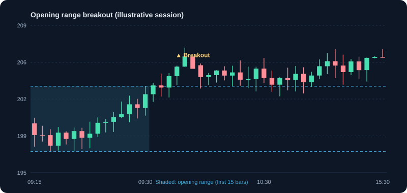

Intraday Trading
Trade within one session. Understand liquidity, order execution, margin and the real risks.
1. What intraday trading means
Intraday trading opens and closes positions within the same trading session. Nothing is held overnight. Because positions must be closed before the market closes, the trader's risk is limited to one session, but the pace is fast and the decisions are many. Most individuals who try it lose money over time, and regulators have published data showing this for derivatives traders. Treat intraday as a demanding skill to be tested with small capital, not as a source of regular income.
2. Products and margin
Intraday equity positions are usually taken with an intraday product (often called MIS), where the broker provides margin, meaning borrowed money. Margin magnifies both profit and loss. The broker square-off time is set by the broker and the exchange. If you do not close the position by then, the broker may sell it automatically, often at a worse price and with extra charges.
- Know the margin your broker gives for each stock. It is not the same for all shares.
- Know the square-off time for your broker. Plan the exit before it.
- Do not confuse intraday margin with delivery. Holding an intraday position overnight is not allowed in the same way.
3. Liquidity and spread: why the stock you pick matters
Liquidity is how easily you can buy and sell without moving the price. Liquid stocks have high volume and a narrow spread (the gap between the best bid and the best ask). Thinly traded stocks have wide spreads and large slippage, which can erase any edge. Start with stocks that trade in large volumes every day.
Example: the bid is ₹499.90 and the ask is ₹500.10, a spread of ₹0.20. A market order buying at ₹500.10 and selling at ₹499.90 immediately loses ₹0.20 per share before any move. On 1,000 shares that is ₹200.
4. Order types for intraday
- Stop-loss (SL) order: a limit order that activates at your trigger. Protects the position if price moves against you.
- Stop-loss market (SL-M): becomes a market order at the trigger. More likely to fill, but the price may be worse in a fast move.
- Limit order: sets the price. Useful for entries when you do not need to act immediately.
- Market order: fills now at the best available price. Dangerous in illiquid or fast-moving stocks.
5. Cost of trading: the hidden headwind
Intraday trades carry several costs. Gross profit can become a net loss after costs, so calculate them before every trade. Costs include brokerage, exchange transaction charges, SEBI fees, stamp duty on the buy side, STT, and GST on some charges. The exact amounts depend on your broker and the rules in force.
Example: buy 100 shares at ₹500 and sell at ₹502. Gross profit ₹200. If total costs are ₹60 (an illustrative figure), the net profit is ₹140. The stock must move more than the costs before you break even.
6. Slippage: the cost you did not plan for
Slippage is the difference between the price you expected and the price you got. It is most common in fast markets, around the open and close, and in thinly traded stocks.
Example: you plan to buy at ₹500 but fill at ₹500.80 on 100 shares. The extra cost is ₹80. If your planned profit was ₹150, slippage has already taken more than half of it.
7. The opening range: a simple intraday framework
Many intraday traders watch the first 15 minutes of trading, the opening range. The high and low of that range set levels. A move above the high with volume, or below the low with volume, is a common signal. Use a stop inside the range, and limit the number of trades per day.
- Mark the opening range high and low after the first 15 minutes.
- Enter only on a clear break with above-average volume.
- Stop just inside the range. Your risk is the distance from entry to that stop.
- Take the first target, and close the position before the square-off time.
8. Risk rules for intraday
- Set a daily loss limit, for example 1% of capital, and stop trading when you reach it.
- Risk 0.25% to 0.5% of capital per trade while learning.
- Limit the number of trades per day, for example three.
- Never average down on a losing intraday position. It is the fastest way to a large loss.
- Do not trade the first and last minutes of the session until you have experience.
9. Psychology of intraday trading
The pace and the constant price movement create strong emotions. Common problems are overtrading after a loss, fear of missing a move, and holding a losing position because closing it feels final. Write your rules before the session, check them during the day, and review them afterwards. Stepping away after two losses is often the most profitable decision of the day.
10. Tax on intraday profit
For tax purposes, intraday equity profits are generally treated as speculative business income, which is taxed at your slab rate. Losses can be set off against other business income and carried forward within the rules. Keep all contract notes and a trade log. See the Tax Basics module for the current rules, and check with a qualified professional.
11. A complete day in practice
9:15: the market opens. You watch the first 15 minutes and mark the range at ₹250 to ₹252 on a liquid stock. 9:35: price breaks above ₹252 with volume 1.5 times the opening-range average. You buy 400 shares at ₹252.10 with a stop at ₹251 (risk ₹1.10 per share, total ₹440). Your target is ₹254.20 (reward ₹2.10 per share, about 1.9 times risk). 10:05: price hits the target, you sell. Gross profit ₹840 on 400 shares. After costs of ₹120 (illustrative), net profit ₹720. You close the day with one trade and stop. The example is for learning; most days do not look like this.
12. Common intraday mistakes
- Trading without a plan for the day.
- Overtrading: taking every small move.
- Moving the stop further away when a trade goes against you.
- Using high leverage on an unknown stock.
- Ignoring costs and then wondering why profits disappear.
- Forgetting the square-off time and being squared off at a bad price.
13. Intraday strategies: buy and sell rules
Intraday strategies must be fast to define and fast to exit. Each one below states the condition, the buy trigger, the stop, the exit, and the time limit. Apply your daily loss limit before using any of them.
Strategy 1: Opening range breakout (ORB)
Mark the high and low of the first 15 minutes. Trade a breakout of that range with volume. Works best on liquid stocks with news or a clear gap.
- Buy: 1-minute or 5-minute close above the opening-range high, with volume above the opening-range average.
- Stop-loss: just inside the range (for example the range midpoint or the low).
- Target: 1 to 2 times the range height from the breakout, or the previous day's high.
- Sell: at target, at the stop, or at a set time (for example 11:30) if the move has stalled. Square off well before the broker's deadline.
Example: opening range ₹250 to ₹252. Price closes above ₹252 at 9:35 on 1.5 times average volume. Buy 400 shares at ₹252.10, stop ₹251 (risk ₹440), target ₹254.20 (reward ₹840).
Why it works
The first 15 minutes set the day's early balance. A close beyond that range, with volume, shows one side has won the opening battle.
Checklist before you buy
- Opening range is marked after 15 minutes
- Breakout close is above the range high on volume
- The stock is liquid with a tight spread
- Square-off time and the daily loss limit are set
Position size example
Capital ₹50,000, risk 0.5% = ₹250. Entry ₹252.10, stop ₹251 (₹1.10). Shares = 250 ÷ 1.10 ≈ 227.
Strategy 2: VWAP pullback (trend day)
On a day where price trades above VWAP, buy pullbacks to VWAP. VWAP is a fair-value line that often acts as support in an uptrend.
- Condition: price has been above VWAP for at least 30 minutes, with higher highs.
- Buy: price pulls back to VWAP and bounces, with a bullish candle and volume increasing on the bounce.
- Stop-loss: just below VWAP, or the pullback low.
- Sell: at the previous high of the day, or trail the stop under each higher low. Exit if price closes below VWAP for two candles.
Why it works
VWAP is the day's average price weighted by volume. Price above it means buyers are in control; a pullback that holds VWAP offers a low-risk entry in the trend direction.
Checklist before you buy
- Price has stayed above VWAP for at least 30 minutes
- The pullback reaches VWAP and holds
- A bullish candle forms on the bounce
- Stop is just below VWAP
Position size example
Entry ₹210.40 at VWAP, stop ₹209.80 (₹0.60 risk). Risk ₹250 gives about 416 shares, but check liquidity and costs first.
Strategy 3: Gap and go
A large gap at the open on news can continue in the direction of the gap if volume stays high. Trade only the first minutes, and avoid it when the gap fades quickly.
- Condition: a gap of at least 2 percent on news, with the first 5-minute candle closing in the gap direction on high volume.
- Buy (gap up): break of the first 5-minute high. Sell short only where permitted and with the same rules reversed.
- Stop-loss: the first 5-minute low (for a long).
- Sell: at 1 to 2 times the initial risk, or when momentum slows (volume falls and the candles shrink).
Why it works
News gaps can continue when the first minutes confirm the move with volume. Waiting for the first 5-minute break avoids buying a gap that is already fading.
Checklist before you buy
- Gap is at least 2 percent on news
- The first 5-minute candle closes in the gap direction
- Volume on the first candle is high
- Stop is set at the first 5-minute low
Position size example
Entry ₹205.50 after the break, stop ₹201.80 (₹3.70 risk). With ₹250 risk, shares = 67.
Strategy 4: Mean reversion at Bollinger Bands (range day)
On a range-bound day, price often returns from the bands toward the middle. Use this only when the day is clearly sideways, not trending.
- Condition: no trend in the first hour, ADX below 20, and price bouncing between support and resistance.
- Buy: price closes outside the lower Bollinger Band and then closes back inside, with RSI below 30 and turning up.
- Stop-loss: a few rupees below the day's low.
- Sell: at the middle band (the 20-period average). Do not hold for the upper band on a range day without new confirmation.
Why it works
On a sideways day, price often swings between the bands and returns to the middle. Buying at the lower band with a reversal signal targets that swing back.
Checklist before you buy
- No clear trend in the first hour (ADX below 20)
- Price closes outside the lower band, then back inside
- RSI is below 30 and turning up
- Target is the middle band, not the upper band
Position size example
Entry near the lower band ₹148, stop ₹146.5 (₹1.50 risk), target the middle band ₹151 (₹3 reward). Shares for ₹250 risk ≈ 166.
Strategy 5: Momentum breakout with volume
Trade a breakout from a short consolidation (for example 30 minutes) when volume surges. This is a continuation trade in a stock already moving.
- Buy: break above the consolidation high with volume at least 2 times the 5-minute average.
- Stop-loss: below the consolidation low.
- Sell: scale out in parts. Take half at 1 times risk, trail the rest under each new 5-minute higher low.
- Avoid: breakouts in the last 30 minutes before the square-off time, when moves reverse quickly.
Why it works
A short consolidation followed by a volume surge shows new buyers entering a stock that is already moving. Trading the breakout joins that momentum.
Checklist before you buy
- Consolidation lasts about 30 minutes
- Breakout volume is at least 2 times the 5-minute average
- Stock is not already extended far from its average
- No breakout in the last 30 minutes before square-off
Position size example
Entry ₹300.80, stop ₹299.90 (₹0.90 risk). Shares for ₹250 risk ≈ 277. Take half at 1 times risk and trail the rest.
Exit strategies that protect intraday profits
- Scale out: take part of the position at the first target and let the rest run with a trailing stop.
- Time stop: close the position at a set time (for example 14:45) if it has not worked.
- Daily profit lock: after a set profit, stop trading for the day to protect gains.
- Hard exit: square off before the broker's deadline, whatever the price.
Choosing an intraday strategy
- Open with a gap or news: gap and go (Strategy 3) or opening range breakout (Strategy 1).
- Strong trend after the first hour: VWAP pullback (Strategy 2).
- Sideways, low-trend day: mean reversion (Strategy 4), with small size.
- Stock already moving on volume: momentum breakout (Strategy 5).
Common intraday strategy mistakes
- Entering late after the move has already happened, so the stop is far away.
- Changing the stop after entry because the price is close to it.
- Trading several strategies in one day without a plan for each.
- Ignoring costs: small targets can be wiped out by brokerage, charges and slippage.
Charts and visuals

Worked examples
Leverage magnifies a small move
Cash ₹20,000 with an illustrative 5× intraday margin gives ₹1,00,000 exposure. A 2% move against you is ₹2,000, which is 10% of your cash. The leverage that multiplies gains multiplies losses equally.
Costs decide the result
Buy 100 shares at ₹500 and sell at ₹502. Gross profit is ₹200. If total costs are ₹60 (an illustrative figure), net profit is ₹140. The trade needs a move above the cost threshold just to break even.
Slippage
You plan to enter at ₹500 but fill at ₹500.80. On 100 shares that is ₹80 worse than planned, which can wipe out a small winning trade.
Real-life scenarios
Sudden news spike at 11:00
A company announces a deal and the stock jumps 5% in minutes. Chasing it at the top often means buying the peak. A trader with a pre-set rule waits for a pullback or skips the trade.
Two losses before lunch
After two losses you feel the urge to 'win it back' with a bigger position. The daily loss limit in your plan says to stop. Following the rule protects the rest of the day and the account.
Use cases
- Opening range breakout: trade a move beyond the high or low of the first 15 minutes, with a stop inside the range.
- Trading only the most liquid stocks where the spread is tight.
- Closing all positions before the session ends to avoid overnight risk.
Key takeaways
- Intraday leverage increases both profit and loss; treat margin with caution.
- Include costs and slippage in every plan.
- Use stop-loss orders and a daily loss limit.
- Most individual traders lose money over time, so start with paper trading.
Questions learners ask
Can I make a living from intraday trading?
Very few people do so consistently. Studies, including SEBI's analysis of F&O traders, have found that most individual traders lose money. Treat intraday as a skill to test with small capital, not as income to rely on.
Do I need leverage to trade intraday?
No. Leverage makes losses larger as well as gains. Without it you need more capital for the same position, but risk is easier to control. Avoid leverage until you have a tested plan.
What happens if I do not close an intraday position in time?
Your broker may square it off automatically at the cut-off time, often at a worse price and with extra charges. Know your broker's square-off time and plan exits before it.
Educational content only, not investment advice. Markets carry risk, including loss of capital. Examples are simplified and may exclude charges, taxes and slippage.